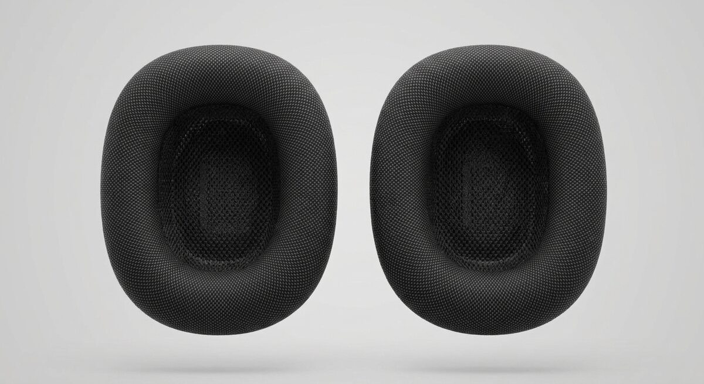

Sonido y cancelación de ruido
Los drivers de 40 mm buscan un sonido equilibrado, con graves, voces y agudos claros.
Modos de escucha
- Cancelación activa: reduce el ruido del entorno.
- Sonido ambiente: permite escuchar lo que pasa alrededor.
- Modo normal: reproduce el audio sin cancelación.
Batería y carga
Hasta 30 horas de uso con cancelación de ruido y hasta 40 horas en modo normal.
Carga rápida por USB-C
- Conectá el cable USB-C al auricular.
- Esperá 10 minutos.
- Con esa carga obtenés hasta 5 horas de reproducción.
Comodidad
Las almohadillas de espuma se adaptan a las orejas. Son removibles y se pueden reemplazar.

Conectividad
Podés conectar el celular y la computadora al mismo tiempo. También cuenta con una entrada de audio de 3,5 mm para usar un cable.
Encontrá los datos de alcance y conexión en especificaciones.